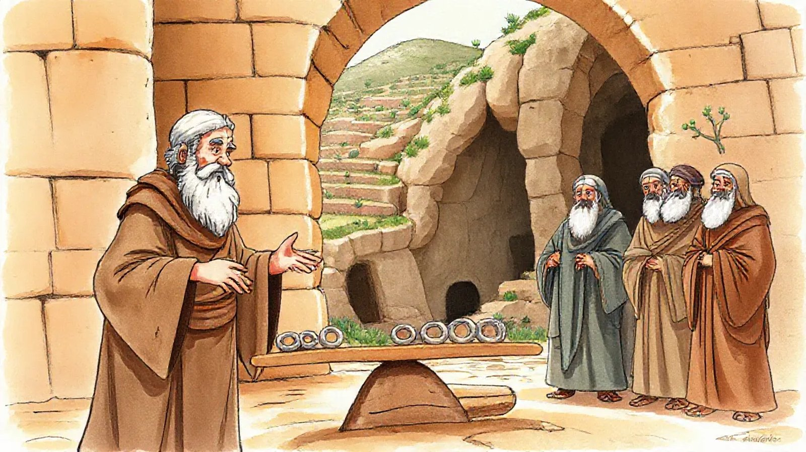
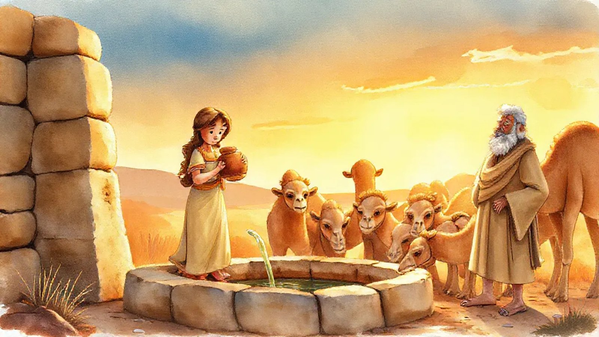
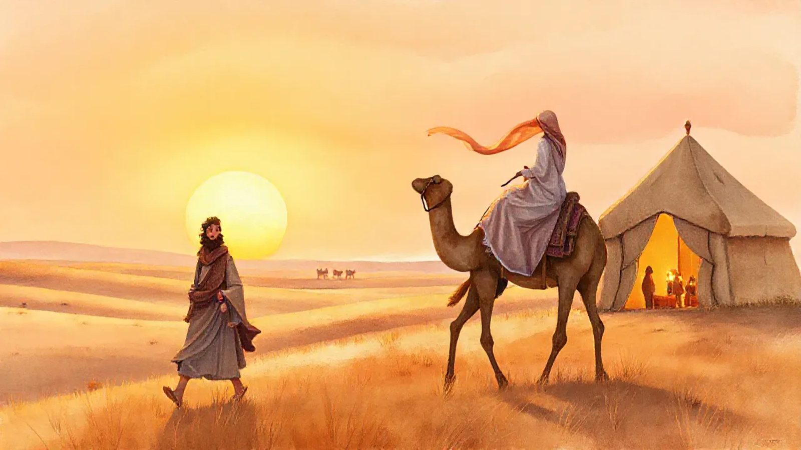

📜 Chayei Sara (חַיֵּי שָׂרָה): The Door Left Open
Shabbat 7 November 2026 · 27 Cheshvan 5787 · Genesis 23:1–25:18
The tent was still there. That was the difficult part. Its ropes still held, its cloth still moved in the wind, and anyone arriving at the camp could have mistaken it for the same home as yesterday. But Sarah was dead, and Avraham had to work out how to leave her behind without leaving everything they had built behind with her.
She had lived 127 years. There had been journeys, arguments, unexpected guests, and the astonishing arrival of Yitzchak, the son whose name carried her laughter. Now Avraham came to Hebron to mourn her, and for a while there was nothing useful to do except weep.
Then he stood up. Sarah needed a resting place.
For all his flocks and servants, all those promises about the land, he did not own a family burial ground. He went to the local Hittites and called himself ger v'toshav: a stranger and a resident. Someone who belonged here, and still needed permission. He asked to buy a place for his dead.
They offered their finest tombs. He bowed, thanked them, and asked instead for a particular cave, Machpelah, at the edge of Ephron's field. He wanted to pay for it. Somewhere his family could return without wondering whether the welcome had expired.
Ephron was sitting among the townspeople at the gate. He rose magnificently to the occasion. The cave? Of course! The field too! A gift! Everyone was listening; generosity was having a very public afternoon.
Avraham bowed again. Please, let him pay.
Well, said Ephron, a piece of land worth four hundred shekels of silver — what was that between friends?
Apparently friendship had a price list.
Avraham did not argue. He weighed out the silver, good silver acceptable to merchants, while the witnesses watched. The account in the Torah carefully includes the field, the cave, and even the trees within its boundaries. Grief had brought him to the gate; he left with something solid enough to outlast a handshake.
He buried Sarah in the cave. There was finally a place where she could rest. But back at the camp there was still the tent, and there was still their son.

Avraham was growing old. The Torah says God had blessed him “in everything”, yet there are things a full storehouse cannot solve. He could secure a grave with silver. He could not buy Yitzchak a future in quite the same way.
He called the senior servant who managed his household. This chapter never gives the man a name; tradition calls him Eliezer. He knew how to look after what Avraham owned. Now Avraham was entrusting him with what he hoped would continue.
He made the servant swear to find Yitzchak a wife from his own homeland and family, rather than from the Canaanites around them. There was one firm condition: Yitzchak must not be taken back there.
The servant spotted the difficulty immediately. What if the woman would not come? Was he supposed to bring Yitzchak to her?
No. Avraham had left that country to make a life here. His son's future was not to be a retreat along his father's tracks. He trusted God to send an angel ahead of the servant. But if the woman refused to follow, the servant would be released from his oath.
That left the servant with a long journey, an enormous responsibility, and no guarantee. He could take presents. He could explain the family. He could not pack someone else's yes in his luggage.
He loaded ten camels with good things from his master's household and set off towards the city of Nachor, in Aram-Naharayim. Behind him was a home waiting for news. Ahead was a woman he had never met, who might want nothing to do with it.
By the time he reached the well outside the town, it was evening. Women were coming out to draw water. He made the camels kneel and faced the part of his mission no amount of careful packing had prepared him for.
How do you recognise someone who might help build a home?
He prayed to Avraham's God. Let him ask a young woman for a drink, and let the right one offer water not just to him, but to his camels too.
He was looking for chesed: kindness that notices more than it is asked to notice. A thirsty traveller was obvious. Ten large animals waiting behind him were rather harder to overlook, but much easier to pretend you hadn't seen.
Before he had finished praying, Rivka arrived with a jar on her shoulder. She went down to the spring, filled it, and came up. The servant hurried towards her.
“Please, let me sip a little water from your jar.”
“Drink, my lord,” she said, lowering it for him.
Then, without being asked: “I will draw for your camels as well, until they finish drinking.”
Until they finished. Not until she got bored, or until one particularly unreasonable camel had used up his share. She emptied the jar into the trough and ran back for more.
The servant watched in silence. Water poured. The animals crowded in. Rivka went down and came up again, while his hopeful little prayer turned into a surprisingly strenuous piece of real life.
Even one thirsty camel can drink an extraordinary amount. Ten were not a small favour. They were a whole after-school activity, with no medal at the end.
At last the drinking stopped. The servant brought out a gold nose-ring and two bracelets. Then he asked whose daughter she was, and whether her father's house had room for them to stay.
She was the daughter of Bethuel, whose father was Avraham's brother Nachor. The servant had found his master's family without even knowing it. And yes, she said, there was straw, animal feed, and room to spend the night.
He bowed down and thanked God. He had come looking for an address. He had found someone who made room.

Rivka ran home with the news. Her brother Laban saw the jewellery and came running out to the visitor. Nothing improves your enthusiasm for a house guest quite like gold bracelets.
“Come in, blessed of God! Why stand outside?”
The camels were unloaded and fed. Water was brought for the travellers' feet. Food appeared. After the road, it must have looked wonderful, but the servant would not eat yet.
“I will not eat until I have told my errand.”
So, with supper waiting, he told them about Avraham, his wealth, his son, and the promise he had made. He described the well, the prayer, and Rivka's offer. He needed them to understand: this was not a casual visit by a man with expensive luggage.
At the gate in Hebron, the future had depended on everyone hearing a sale. Here, around a meal, it depended on everyone hearing a story.
Laban and Bethuel answered that this had come from God. Rivka could go and become Yitzchak's wife. The servant bowed again, brought out silver, gold, and clothes, and at last everyone ate.
By morning he was ready to leave. Her brother and mother were not. Let Rivka stay a while, they said. Ten days, perhaps.
The servant had crossed all that distance, found the family, and seen the kindness he had hoped for. Now the journey threatened to stop at the breakfast table. He asked them not to delay him.
Then they called Rivka.
“Will you go with this man?”
There it was: the question that neither Avraham's instructions nor the servant's presents could answer for her.
“אֵלֵךְ,” she said. “I'll go.”
She did not know Yitzchak. She had not seen the tent waiting at the other end of the road. This was not a decision without risk. But the person who had run to bring water could also choose where her own feet would take her.
Her family blessed her: may she become thousands upon thousands. Rivka and her attendants mounted the camels; her nurse went with her. The servant could finally turn towards home, carrying not a purchase but a promise someone else had freely made.
On the outward journey the camels had carried gifts. Now they carried a new member of the family, with her own memories, her own people behind her, and every reason to wonder what lay ahead.
Near the end of the journey, in the Negev, a man was walking in a field towards evening. Yitzchak had come from Beer-lachai-roi. The Torah says he had gone out lasuach — a word often understood as walking or meditating, and read by the rabbis as prayer.
He looked up and saw camels approaching.
Rivka looked up too. She saw him and came down from her camel — the Hebrew says she “fell”, though commentators also understand a quick slide or dismount. However elegant it was, the long journey suddenly had a face.
“Who is that man walking in the field towards us?”
“He is my master,” the servant answered.
She took her veil and covered herself. The servant told Yitzchak everything he had done. After so much talking about this man in distant rooms, here he was, close enough to hear the story himself.

Yitzchak brought Rivka into the tent of Sarah his mother. That is how the Torah describes it: not just a tent, but Sarah's tent. The place still carried her name.
He married Rivka. He loved her. And he was comforted after his mother.
The story does not say that Sarah was forgotten, or that a wedding fixed everything. Rivka was not a replacement mother, and she had not travelled all that way to become someone else's memory. A new relationship could grow in a place where an old love still mattered.
Later, the rabbis pictured this as a light returning. In their midrash, Sarah's tent had held a lamp that burned from one Shabbat to the next, a blessing in the dough, a cloud above it, and doors open to guests. When she died, those blessings disappeared. With Rivka, they returned.
You can hear the connection without needing a miraculous lamp. At a faraway well, Rivka had seen tired strangers and made room for them. Now that generosity had arrived at the home where Sarah once fed unexpected guests.
Avraham lived on. He married Keturah and had six more sons; the family kept spreading beyond anything one tent could hold. He gave gifts to those sons and sent them east, while leaving his estate to Yitzchak. Then, at 175, he died “old and satisfied”.
His sons took him to Machpelah: Yitzchak and Yishmael together.
The Torah does not give us their conversation. It does not claim that every hurt in this family had vanished. It simply places the two brothers beside the same grave, doing for their father what he had once done for Sarah.
The silver had secured a place to return to. It could never have made them return together.
That part had to be done by people.
Back at the beginning, Avraham had stood up from mourning without knowing how the household would go on. Now Sarah rested beside him, their son had someone to love, and the tent was no longer only a place someone was missing from.
Its door could open for whoever came next.